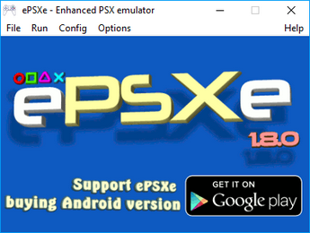
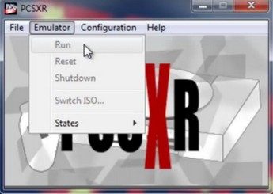
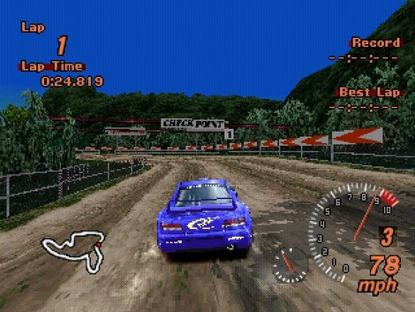
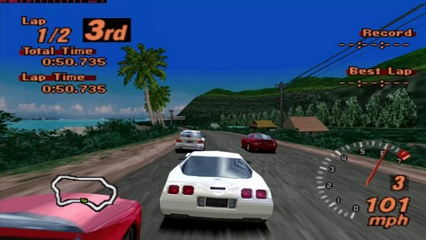
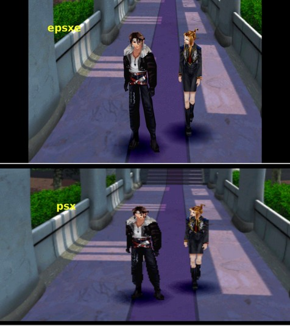

Emulador Playstation 1
ePSXe
ePSXe (enhanced PSX emulator) é um emulador de PlayStation, sendo compatível com Microsoft Windows , Android OS , Ios, Linux. Foi desenvolvido por 3 autores, que usaram os apelidos "Calb", "_Demo_" e "Galer". ePSXe é de código fechado com exceção da application programming interface (API) usada na programação dos plug-ins.
História
Por 7
anos, o ePSXe foi desenvolvido em segredo, longe do publico. Quando
lançado em 14 de outubro de 2000, foi revolucionário na cena da emulação
do PSX, superando pela alta compatibilidade e performance emuladores da
época.
Após ePSXe 1.6.0 ser lançado em 5 de agosto de 2003, seu
desenvolvimento estagnou, com rumores de que o código fonte havia sido
perdido devido a uma falha no disco rígido. No entanto, em 5 de abril de
2008, os desenvolvedores fizeram um anúncio publico revelando que no
verão de 2007 haviam decidido continuar o desenvolvimento do emulador,
pelo encorajamento dos usuários. Em 24 de maio de 2008, é lançada a
versão 1.7.0 e em 09 de novembro de 2012 a versão 1.8.0.
|  Janela do emulador |
Design
Como os emuladores modernos, o ePSXe faz uso de plug-ins para emular a GPU, o SPU (som) e o CD-ROM (funções de drive), modelo inicialmente utilizado no PSEmu Pro. Jogos podem ser carregados do drive de CDs do computador ou de muitos tipos de imagens de CD isso diretamente do HD do usuário.
A capacidade do patching permite ao usuário aplicar patches nos jogos. Jogos que não funcionam corretamente, ou nem mesmo começam, podem ser corrigidos e jogados com o uso dos arquivos de patch no formato .ppf. Vale lembrar que nem todos os jogos com problemas possuem patches.
Diferente de outros emuladores que usam a high level emulation para imitar as funções da BIOS do PlayStation, o ePSXe precisa de uma imagem da BIOS oficial do Sony PlayStation. Existem várias versões dessas BIOS, mas todas são de propriedade intelectual da Sony, então é ilegal distribuí-las. Por essa razão, o emulador não vem com tais arquivos, necessitando que o usuário as consiga.
Requisitos
Segundo o site os requisitos são:
- Processador: mínimo Pentium 200 MHz, recomendado Pentium 3 com 1 GHz
- Memória RAM: mínimo 320 MB de RAM, recomendado 712 MB de RAM
- Placa de Vídeo: Placa de vídeo capaz de renderizar 3D com suporte para OpenGL, DirectX, ou Glide
- Sistema Operacional: Windows ou Linux
- CD-ROM: 16x ou mais (opcional)
Plug-ins
- GPU: A maior parte dos plug-ins GPU renderizam em Direct3D, OpenGL, ou ainda Glide API, e são liberados como freeware ou com código aberto
- SPU: Os plug-ins SPU podem emular tudo desde música até efeitos de som, com variável sucesso dependendo das configurações do plug-in e também de qual está sendo usado
- CD-ROM: ePSXe já vem com um plug-in de CD-ROM, mas a outros disponíveis para download grátis sendo que podem chegar a emular 7 diferentes tipos de leitura
- Controle: O plug-in de base é suficiente, mas a outros que permitem mais funcionalidades.
Compatibilidade
PCSX
O PCSX é um emulador de console de videogame gratuito e de código aberto que permite que um software projetado para ser usado com o Sony PlayStation seja executado em computadores pessoais . Ao longo dos anos, o desenvolvimento mudou de mãos várias vezes com o PCSX-Reloaded (PCSXR) sendo agora a versão principal.
O PCSX tem uma alta taxa de compatibilidade e atualmente está disponível para vários sistemas operacionais diferentes , incluindo Microsoft Windows , OS X e Linux . Ele é liberado sob a Licença Pública Geral GNU.
O
emulador foi lançado pela primeira vez para o PC em 31 de agosto de
2000. O desenvolvimento oficial terminou em 17 de setembro de 2003, e o desenvolvimento mudou para o novo emulador do PlayStation 2 , PCSX2.
O PCSX-df foi criado em 2006 e adicionou novos recursos, uma nova interface baseada em GTK , o suporte AMD64 , e corrigiu alguns bugs, mas foi desenvolvido principalmente tendo em mente apenas a compatibilidade com o Linux. A versão 1.10 foi lançada em 29 de março de 2009.
O PCSX-Reloaded é um novo projeto criado em meados de 2009, que é
baseado no trabalho da ramificação PCSX-df, completamente independente, e
funciona em correções de bugs, mantendo a compatibilidade do Windows e
do OS X com o Linux. O PCSX-df e o PCSX-Reloaded coexistiram por um tempo, com o PCSX-df mesclando as mudanças do PCSX-Reloaded de volta para o df .
|  Janela do Emulador |
O PCSX suporta jogos em rede e plug-ins externos, conforme usado pelo ePSXe. Tal como acontece com muitos emuladores modernos PCSX-Reloaded suporta savestates e também tem recurso Save Rewind (atualmente apenas versão OSX e Linux), Suporte para arquivos ECM (atualmente apenas OS X e versão Linux), Suporte para Libarchive (atualmente apenas versão OSX e Linux) , widescreen hack e faz uso de plug-ins para emular GPU , SPU e CD-ROM , um modelo estabelecido no PSEmu Pro , usa o plugin Peops OpenGL para gráficos no padrão, mas também pode usar o OpenGL2, gpuBladeSoft, PCSX2 do Pete Plugin gráfico GSDX, Plugin GPU AmiDog, Pacote de shaders Asmodeans PSXFX, plugins de entrada como o Lilypad e Pokopom Pad Plugin. Ele também tem suporte a múltiplas pistas e é o único emulador PS1 com compatibilidade com opções anti-jitter em plugins gráficos, como precisão GTE no plugin Peops padrão OpenGL, ou melhor precisão de coordenadas no gpuBladeSoft do Edgbla e também suporta o plugin PeteOpenGL2Tweak. Além disso, o PCSX procura simular a funcionalidade do BIOS do PlayStation e, consequentemente, não requer um despejo de arquivo do BIOS para funcionar, facilitando a emulação legal, mas a emulação do Bios ainda está incompleta, portanto é melhor usar o BIOS para evitar vários bugs e compatibilidade reduzida.
|  Imagem do PS 1 |
|  Imagem do Emulador PS 1 |
|  Emulador VS PS 1 |